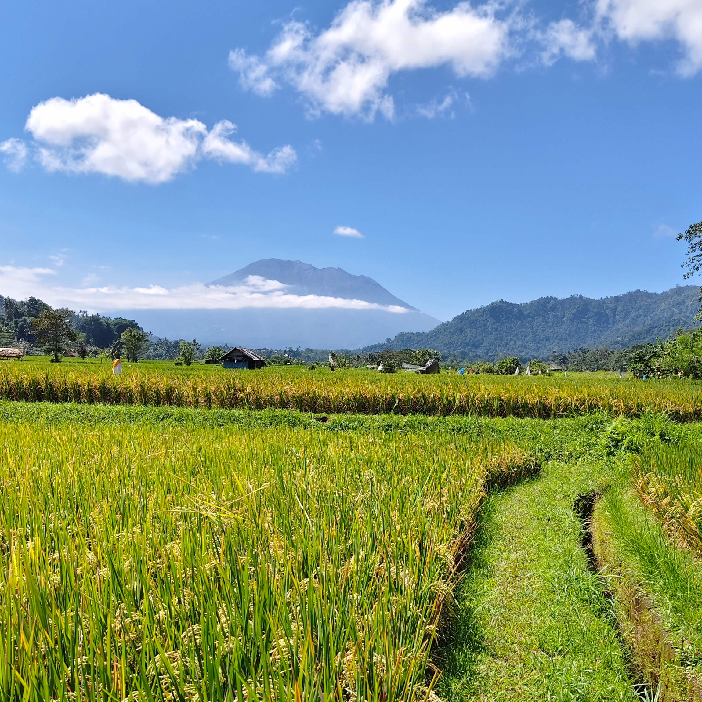

Discover Sidemen
5 Best Things to Do in Sidemen Bali
From walking through rice fields to sharing a meal in a local home, discover five meaningful ways to experience Sidemen.
Read the guide →Travel ideas, local culture and experiences from the people who call Sidemen home.
Welcome to the Sidemen Tour Guide blog. Find inspiration for exploring the rice fields, learning about Balinese culture, tasting local food and discovering a quieter side of Bali.

Discover Sidemen
From walking through rice fields to sharing a meal in a local home, discover five meaningful ways to experience Sidemen.
Read the guide →